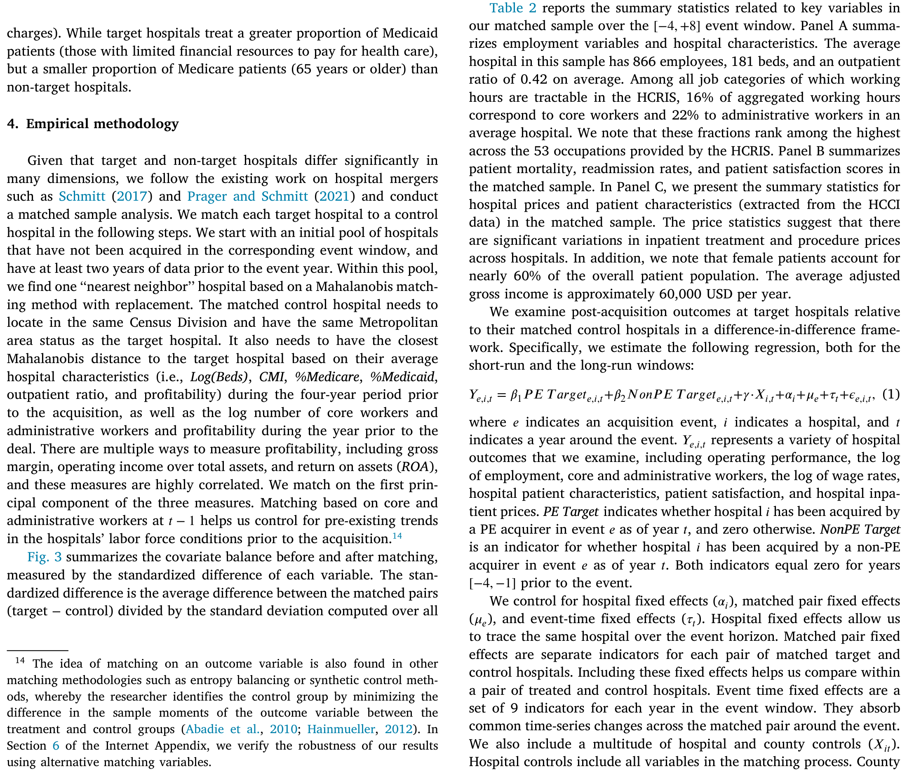
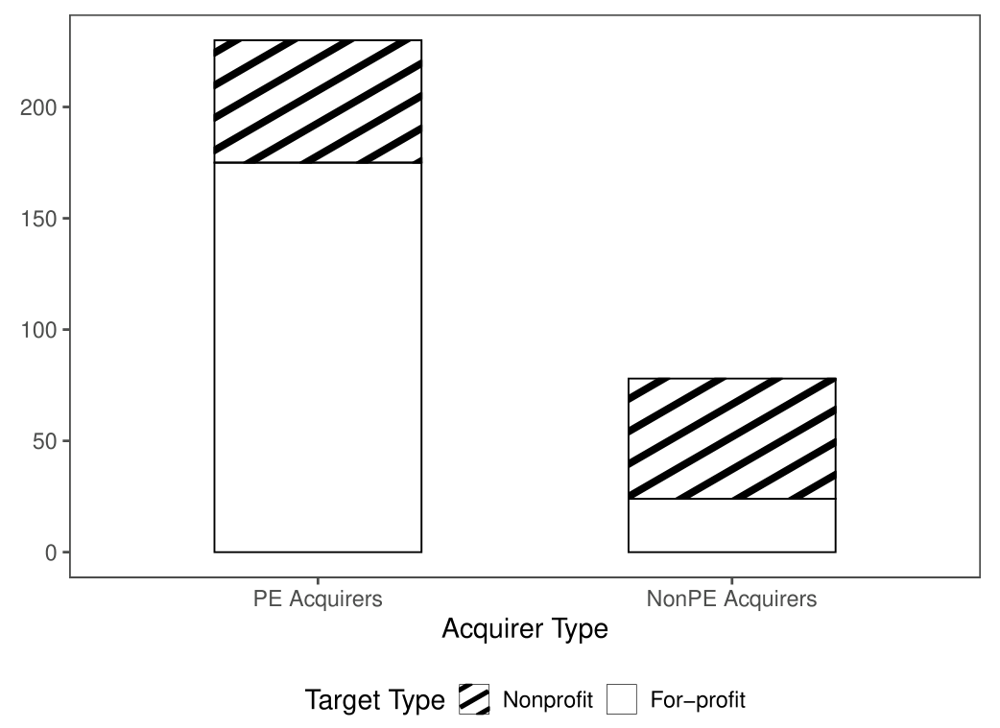
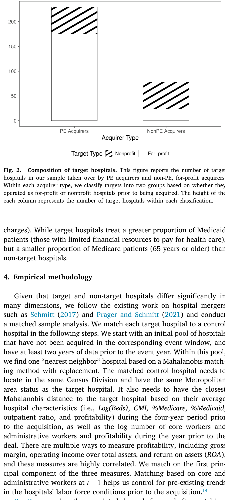
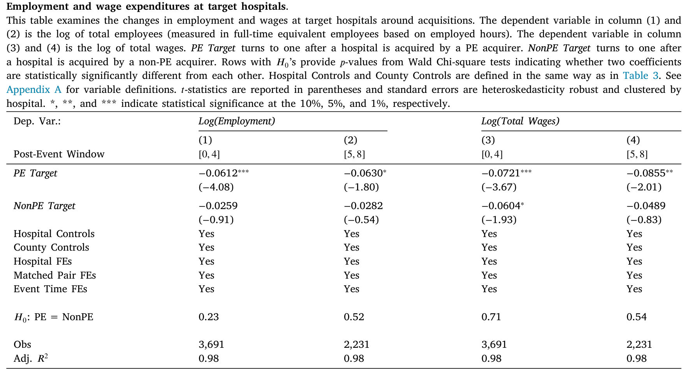
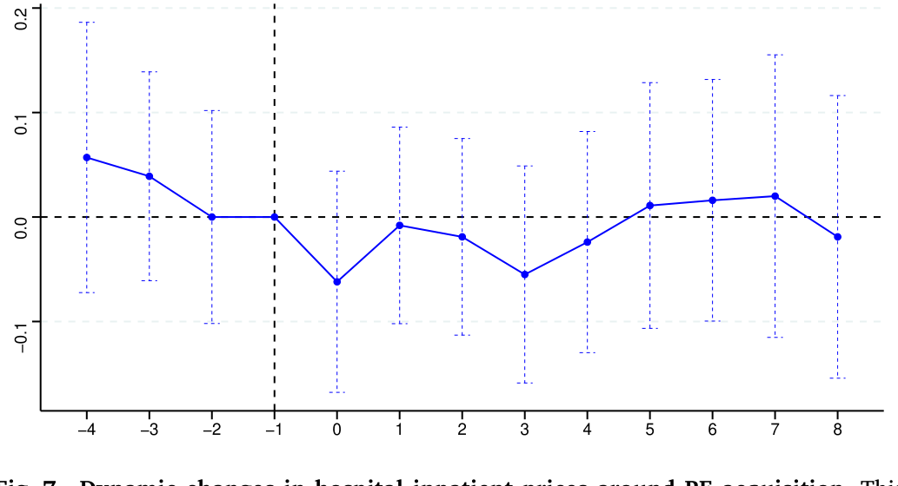
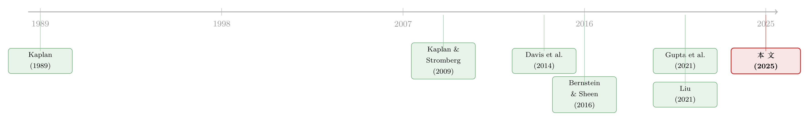

PE 买下医院之后：被裁掉的，是行政人员还是护士？
本文读的是 Gao, Kim & Sevilir (2025, Journal of Financial Economics)：私募股权 (private equity, PE) 收购美国医院后，医院并没有像舆论担心的那样大批倒闭，也没有抬高住院价格、挑选「更有钱的病人」，更没有恶化死亡率和再入院率；真正发生的，是一场精准的成本手术——核心医护人员只是短暂减少、长期回到原位，被永久砍掉的是行政人员（长期低 20%）和行政人员的工资。换句话说，PE 切的是「行政赘肉」，不是「医疗肌肉」。
1 一个被舆论判了刑的故事
先讲一个你大概率在新闻里见过的桥段。
一家私募基金买下了你所在小镇上唯一的医院。接下来会发生什么？《华尔街日报》给出的剧本是这样的：他们给医院压上一身债，变卖资产，裁掉员工，最后——在某些案例里——干脆把医院关掉。地方居民奋起反抗。这是一出关于「门口的野蛮人」如何洗劫公共医疗的标准悲剧。
这个故事之所以让人不安，是因为它触及的不是一家普通公司。美国医疗产业贡献了接近 20% 的 GDP，是全美前十的雇主，更是无数社区里不可替代的公共品。过去十年，PE 向美国医疗产业投了大约 $200 billion，其中很大一部分流向了医院。于是一个尖锐的政策问题浮上水面：当以「财务工程」和「成本控制」著称的资本，遇上以「救死扶伤」为天职的医院，受伤的会是谁？
支持者说，PE 带来了医院急需的管理专长和运营改革，能把濒死的医院救活。反对者说，PE 只会榨干医院。两种叙事都很响亮，但都缺一样东西：干净的、能分清因果的证据。
这正是这篇论文要补上的一块拼图。它的野心很明确——不满足于讲一个动人的故事，而要把投资者、员工、病人这三类利益相关者的命运，一项一项地量出来。
2 数据：先把「谁是 PE」这件事搞清楚
要研究 PE 收购医院的后果，第一步竟然是个苦力活：你得先知道哪些医院被谁买了。
作者从 Cooper et al. (2019) 提供的医院并购名册出发，沿用其方法把样本延伸到 2018 年，最终手工整理出 2001–2018 年间的 1,218 桩医院并购，涉及 478 个独立买方和 1,686 家目标医院。识别买方身份的过程相当扎实：先用美国医院协会 (American Hospital Association, AHA) 年度调查里医院「系统识别码」的变化来捕捉所有权变更，再逐一对照 SDC、Factset、Becker's Hospital Review 等多个并购数据库人工核验，模糊时甚至要翻当地报纸。

Table 2: reports the summary statistics related to key variables in
在这 1,218 桩交易里，作者把焦点收窄到 281 桩买方为「营利性组织」的收购——买家要么是 PE 基金、PE 旗下医院，要么是无 PE 背景的营利性医院。这些交易牵涉 610 家独立目标医院，其中能明确归入 PE 阵营（PE 直接收购，或 PE 旗下医院做「滚动收购 (roll-up acquisitions)」）的有 117 桩。

Figure 2: reports the composition of deals involving different types of
为什么要专门留出「无 PE 背景的营利性买家」这一类？这是全文一个聪明的设计，先按下不表，下面会回来。
3 识别策略：匹配 + 两个时间窗
接着，一个自然的问题是：你怎么知道医院后来的变化是 PE「造成」的，而不是它本来就会这样？
作者的基准做法是匹配 (matching)：给每一家被收购的目标医院，找一组在地理位置、时间、以及事件前特征上都高度相似、但没有被收购的医院作为对照组。匹配前后协变量是否真的平衡了？这是这类设计的命门，作者用 Figure 3 把匹配前后的协变量差异画了出来——匹配后，处理组和对照组在各维度上几乎重合。

Figure 3: summarizes the covariate balance before and after matching
然后是时间维度。作者刻意设了两个事件窗口，而不是一个：
- 短期：把事件前四年
[−4, −1]与事件后四年[0, 4]对比； - 长期：把事件前四年与事件后第
[5, 8]年对比。
为什么非要看到第八年？因为重组从来不是一蹴而就的。大规模的运营改造往往要好几年才落地，只盯着短期，很可能把改革真正的后果给漏掉——甚至会得出相反的结论。这个「长短两段」的设计，正是后面那个最关键反转的舞台。
4 第一个反转：医院没有倒，但工资单瘦了
舆论最大的恐惧是「PE 会关医院」。数据怎么说？
没有。 PE 收购的医院，其关闭率并不比对照组更高。不仅如此，被收购医院的经营利润率（operating profitability）在短期内显著改善（尽管这一效应在长期变得不再显著）。第一个反转出现了：那个「野蛮人关医院」的剧本，至少在平均意义上，不成立。
但「医院活着」不等于「所有岗位都活着」。这才是故事真正开始的地方。作者发现，PE 收购后医院的总就业在头四年下降了约 6%，并在长期维持在相近水平。作为直接后果，总工资单（total wage bill）在头四年下降 7%，到第八年末更是比收购前低了 9%。
把这两件事放在一起看：医院没多关，但花在人身上的钱实实在在地少了。这正是 PE「在不增加倒闭风险的前提下大幅削减成本」的画像。问题只剩一个——这刀，砍在了谁身上？
5 真正关键的一步：把「医生护士」和「行政人员」分开
到这里，绝大多数研究会止步于「就业下降了 X%」。但这篇论文最核心、也最有价值的一步，是把医院的劳动力拆成两类来看：
- 核心员工 (core workers)：护士、药剂师、医生——直接负责医疗服务的人；
- 行政员工 (administrative workers)：其余的管理和后勤人员。
为什么这个区分如此要命？因为「裁掉一个会计」和「裁掉一个 ICU 护士」对病人的含义天差地别。如果 PE 砍的是核心医护，那舆论的担忧就坐实了；如果砍的是行政冗余，那就成了 Jensen (2019)、Kaplan & Stromberg (2009) 笔下「运营专长」的教科书案例。
数据给出的答案，几乎是为后一种叙事量身定做的：
- 核心员工：在头四年的窗口里短暂下降，但到第二个窗口（第 5–8 年）回到了收购前的水平。也就是说，八年下来，核心医护的人数与收购前没有显著差异。
- 行政员工：头四年就大降
17%，而且这个下降不回头，到第二个窗口末仍维持在收购前以下约20%。
一升一降，对比鲜明。核心员工的短暂减少，作者解释为重组初期运营中断、员工基于对「PE 旗下医院工作环境」偏好的重新排序、以及技能型劳动力市场搜寻摩擦共同作用的结果——是一次暂时的扰动，而非永久的削减。行政员工则是被结构性地、永久性地精简掉了。

Table 4
这就把全文的核心论点钉死了：PE 切的是行政赘肉，不是医疗肌肉。（关于 PE/重组背后「减少代理成本、把现金从低效用途里挤出来」的母题，可参见《现金为什么一定要「还」出去？——四十年后，重读 Jensen 的自由现金流》。）
6 两个加固：工资率，以及非营利医院
光看「人数」还不够。人数下降，可能是医院主动少雇了人（劳动需求下降），也可能是工人不愿来（劳动供给下降）。怎么分清？看工资率 (wage rate)。
作者发现，核心员工的工资率没有出现有意义的变化，而行政员工的工资率在长期下降了约 7%。「数量降、价格也降」同时出现在行政岗位上，强烈指向这是 PE 主动收缩行政职能的结果——是需求侧的故事，不是工人用脚投票。
第二个加固来自非营利医院 (nonprofit hospitals)。作者预期，原本是非营利身份的目标医院，被 PE 收购后行政裁员会更猛——一来非营利医院缺乏投资者监督，本就容易养着过多的行政人员；二来它们倾向于把病人满意度放在利润之前，因而维持着庞大的行政职能。数据完全印证：原非营利医院在长期里行政员工锐减 33%，而核心员工照样回到收购前水平；相比之下，原本就是营利身份的目标医院，行政裁员幅度要小得多。
这给出了一个很漂亮的机制：PE 改善医院效率的一条渠道，是把非营利医院转成营利医院，从而给医院装上「投资者问责」。哪里行政冗余最严重，PE 的手术刀就切得最深。
7 第二个反转：用「非 PE 买家」当镜子
读到这里，一个挑剔的读者会立刻反驳：你说的这些「成本纪律」，是 PE 特有的，还是任何一个营利性买家都会做的？毕竟，谁买了医院都想赚钱。
这正是第 2 节埋下的伏笔。作者把 PE 买家和非 PE 的营利性买家放在一起比。后者同样有逐利动机，但通常不具备 PE 那样的运营专长、财务工程能力和治理纪律。如果上面那套「精准裁行政」的模式在非 PE 买家身上也成立，那就不能归功于 PE。
结果再次反转，且方向出人意料：
- 非 PE 的营利性买家，其目标医院在收购后八年内有
16%的关闭概率——真正爱关医院的，反而是这类买家，不是 PE； - 这些医院虽然也减员，但幅度较小且不显著；
- 在员工构成上，它们砍的是核心员工，行政员工反而没动——和 PE 恰好相反。
这面镜子照得很清楚：那套「保住核心医护、精简行政、还不增加倒闭风险」的精细操作，是 PE 独有的，不是营利性买家的通病。PE 的「运营专长」在这里有了实打实的对照证据。
8 关于选择偏误：CPOM 这把外生的钥匙
但还有一个挥之不去的担忧：会不会是 PE 专挑那些「本来就要开始裁员、改善运营」的医院下手？如果是，那上面的因果解读就要打折扣。
作者用两招回应。
第一招直接看事件前趋势：如果 PE 专挑「已经在裁员」的医院，那利润和员工的变化应该在收购之前就出现。但数据显示，利润和用工的变化并不发生在收购前，而是收购之后才启动。
第二招，也是真正关键的一步，是借了 Liu (2021) 的识别思路，利用各州「企业行医原则 (Corporate Practice of Medicine, CPOM) 」管制的交错变化 (staggered changes)。CPOM 禁止没有行医执照的人或商业公司（比如 PE）行医或雇佣医生提供医疗服务；各州对它的执行松紧不一，而且随时间变化。作者手工梳理了州层面的立法、判例和州检察长的非正式意见信，编出一份各州 CPOM 严格度变化的清单。
识别假设是：一个州 CPOM 原则的变化，并非由该州医院的经营状况和运营特征驱动。作者验证了这一点——医疗支出、收入、死亡率等众多州层面特征，都无法预测 CPOM 原则的变化。在此基础上，结论很有说服力：一旦某州放松 CPOM，该州医院更可能被 PE 收购；目标医院随后利润改善、用工和工资下降；尤其是，行政人员显著减少超过 9%，而核心员工几乎纹丝不动。
注意这个不对称的妙处：CPOM 管的是「能不能雇医生」。如果 PE 真在动核心医疗，放松 CPOM 应该最先冲击核心员工。可现实里被砍的偏偏是行政人员、核心员工不动——这反过来又一次坐实了「PE 动的不是医疗」。
作者也诚实地承认，这些结果并不能完全消除内生性担忧，但它们为「PE 确实在影响目标医院的用工结构与盈利能力」这一论断，提供了又一层独立支撑。
9 那病人呢？价格、构成、满意度、生死
把视角转回最该被关心的一群人——病人。行政裁员会不会以牺牲病人为代价？作者从四个维度逐一检验。
价格。 作者专门盯住住院价格 (inpatient prices)，因为住院涵盖了最贵的手术，是医院收入的大头——在其匹配样本里，住院收费平均占总收费的 58%。他们动用了一个珍贵的专有数据：医疗成本研究院 (Health Care Cost Institute, HCCI) 的保险理赔数据，覆盖 Aetna、Humana、Kaiser Permanente、Blue Health Intelligence 四大私营保险公司在 2012–2018 年的理赔。结论是：相比对照医院，PE 收购并没有显著抬高住院价格。在七种具体手术中，六种价格没涨——唯一的例外是结肠镜检查 (colonoscopy)，价格上涨约 29%。
这一点很值得强调：它与 Liu (2021) 关注的门诊价格形成互补。门诊和住院是两个故事，而住院更贵、更关乎病人负担。
病人构成。 案例组合指数 (case mix index, CMI) 不变，门诊比例反而显著下降，Medicare 病人比例只在头四年短暂下降、长期消失。没有证据表明 PE 医院转向服务「更年轻、更富有、健康风险更低」的病人，也没有证据显示它们转向更赚钱的操作（比如用剖腹产替代顺产）。
满意度。 这是唯一一处明确变差的地方。作者用医院消费者评估 (HCAHPS) 调查发现，PE 收购医院在多个维度上的病人满意度确实下降——这很可能与行政人员减少有关。但是，被非 PE 营利性买家收购的医院也出现了类似的满意度下降。所以这更像是「任何营利性收购都会带来的服务中断」，而非 PE 独有的恶果。
生死。 最硬的指标。作者考察了心脏病发作、心力衰竭、肺炎三类病症的死亡率和再入院率 (readmission rates)。结果：PE 收购医院的病人死亡率没有显著上升，再入院率在任何一类病症上也没有上升。

Figure 7: Dynamic changes in hospital inpatient prices around PE acquisition. This
把这几条拼起来：病人构成没变、价格没涨、死亡和再入院没恶化——这意味着，在医疗质量这件事上，PE 收购并没有让病人变得更糟。代价主要落在「满意度」这一更软的维度上，而它又不是 PE 的专利。
10 文献脉络
这篇论文坐在一条很长的研究河流的下游。
最上游，是 PE/杠杆收购对企业运营与就业影响的经典追问。Kaplan (1989) 开创性地研究了管理层收购后的运营变化；Kaplan & Stromberg (2009) 则系统梳理了 PE 的持有期与退出，记录下 PE 持有期自 1990 年代以来显著拉长。到了 Davis et al. (2014)，研究者第一次用大规模雇主-雇员匹配数据，刻画 PE 收购对就业和生产率的净效应；Bernstein & Sheen (2016) 进一步深入到运营层面，看 PE 如何改造被收购企业。

接着，研究的镜头转向了一个最敏感的行业——医疗照护。Gupta et al. (2021) 在养老院 (nursing home) 行业敲响警钟：PE 收购降低了护理质量。这给「PE 进医疗」蒙上一层阴影。但本文作者敏锐地指出，养老院和医院有本质差异：养老院病人平均年龄超过 80、流动性差、信息劣势大，PE 因而可以在不损害收入和声誉的前提下牺牲病人福利来削减成本；而医院病人更年轻、更有「用脚投票」的能力，PE 大刀阔斧砍医疗服务反而会赶走病人、损失收入。行业不同，结论自然可能相反。
真正与本文最近的，是 Liu (2021)——同样来自金融经济学领域，同样给出了超越「选择效应」的因果解读，关注 PE 如何影响门诊价格与病人福利。本文则在三处与之分野：它把员工拆成核心 vs 行政、它看的是住院价格、它第一次系统回答了「PE 是否过度关闭医院」这个政策关切。
于是，本文（Gao, Kim & Sevilir, 2025）落在了这样一个位置：第一篇把病人、价格、员工用统一抽样和统一方法放在一起考察的医院 PE 研究，并因此得以讲出一个比单看任一维度都更完整、也更出人意料的故事。
11 评论与延伸（Q&A + 研究方向）
(a) 几个可能的疑问
Q：既然核心员工长期回到原位，那「裁员改善了利润」这个说法不就站不住脚了吗？
不矛盾。短期利润改善与短期就业下降同时出现；而长期里，永久消失的是行政岗位和行政工资（长期低约 20%、行政工资率低约 7%），核心员工只是「先走后回」。成本节约主要来自被永久砍掉的行政条线，而非核心医护。利润效应在长期变得不显著，作者也如实报告了，没有夸大。
Q：满意度下降，难道不算「病人变差了」吗？
算一种变差，但要分清是谁造成的。关键证据是：非 PE 的营利性买家收购的医院也出现了类似的满意度下降。这说明满意度下滑更像是「任何营利性收购带来的服务中断」，而非 PE 独有。真正硬的健康指标——死亡率、再入院率——则没有恶化。
Q：匹配 (matching) 这种设计，真的能支撑因果解读吗？
单靠匹配确实只能控制可观测特征，挡不住「PE 专挑将要改善的医院」这类选择偏误。论文的回应是双保险：一是事前趋势检验（变化发生在收购后而非收购前），二是借 CPOM 管制的交错变化制造准外生的收购概率冲击。后者才是把结论从「相关」推向「因果」的关键一步。
Q：为什么非营利医院被砍得最狠？
因为非营利医院缺投资者监督、又把病人满意度置于利润之上，从而养着过量的行政职能。原非营利目标长期行政员工降 33%，核心员工却回到原位——这恰好支持「PE 通过把非营利转为营利、引入投资者问责来挤出行政冗余」的机制。
Q：和养老院里「PE 害了病人」的结论（Gupta et al., 2021）冲突吗？
不冲突，是行业差异。养老院病人年迈、信息弱、难以用脚投票，PE 可在不损收入的前提下牺牲福利；医院病人更年轻、更可流动，砍医疗服务会直接赶走病人。所以同样是 PE，在两个行业里的最优策略和后果可以完全不同。
Q：唯一涨价的结肠镜（+29%）该怎么理解？
这是七种手术里唯一的例外，且仅是单项。作者并未据此改写「住院价格整体未显著上涨」的结论。把它当作一个需要进一步研究的局部异常更稳妥，而不是 PE「普遍抬价」的证据。
(b) 几个可能的研究问题与提案
1. PE 收购医院的债务负担，去了哪里？
【经济故事】舆论里 PE「给医院压债」的指控，本文并未直接处理。如果 PE 通过母公司或 SPV 层层加杠杆，医院报表上未必看得到，但债务的真实风险可能转嫁给了供应商、债券持有人或地方政府。 【可行性】中。需要把医院与其 PE 母公司、以及发行的市政债/公司债（如 Municipal Securities、医院系统债）对接起来。难点在于私有交易的资本结构不透明；可借医院债券利差与评级变化做间接识别。
2. 行政裁员对地方劳动力市场的外溢。
【经济故事】行政岗位长期低 20%，这些人去了哪里？在医院是大雇主的小镇，行政条线的永久收缩可能压低本地就业和消费，形成局部冲击。 【可行性】高。可用 LEHD/QCEW 等地区就业数据，配合本文已有的 CPOM 交错变化做事件研究，识别医院 PE 收购对通勤区 (commuting zone) 就业的溢出。本文已用通勤区-年固定效应，数据基础现成。
3. PE 收购医院的信用风险定价。
【经济故事】既然 PE 收购不增加倒闭率、还短期改善利润，债券市场是否「看见」了这一点？还是被舆论的负面叙事带偏、给出了过高的利差？这是把本文的实体结论翻译到信用市场的自然一跃。 【可行性】中。需医院系统的债券或银行贷款定价数据，与 PE 收购事件对齐，做收购前后的利差事件研究。样本量是主要约束——发债的医院系统有限。
4. 外资 PE vs 本土 PE 的差异。
【经济故事】不同来源的资本，运营专长和退出期限可能不同。若能识别基金 LP 的地域构成，可检验「耐心资本」与「短钱」在医院重组上的行为差异，呼应 PE 持有期拉长的事实（Kaplan & Stromberg, 2009）。 【可行性】低到中。基金 LP 构成数据（Preqin）覆盖不全，且要与具体医院交易精确对接，识别难度大。诚实地说，目前更像是「想法」而非「可立刻动手」的项目。
5. 满意度下降的「服务中断」到底持续多久？
【经济故事】本文发现满意度下降在 PE 和非 PE 买家身上都出现，更像收购本身的过渡性摩擦。那它是永久的还是会随整合完成而修复？这关乎「收购阵痛」与「质量恶化」的根本区分。 【可行性】高。HCAHPS 是逐年公开面板，直接把满意度做成动态事件研究（像本文 Figure 7 处理价格那样），即可观察其是否随时间收敛。
12 我的判断
这篇论文最大的贡献，在于它把一个被舆论高度情绪化的问题，拆成了可以分别检验的几个干净问题，然后用一致的样本和方法逐一作答。它最漂亮的一刀，是把医院员工切成「核心 vs 行政」——正是这一刀，让「PE 砍人」这个笼统指控，变成了「PE 砍行政、留医护」这个精确得多、也意外得多的结论。配上「非 PE 营利买家」这面镜子和 CPOM 这把外生钥匙，证据链相当完整。
我的担忧主要在识别的边界上。匹配 + 事前趋势能挡住一部分选择偏误，但 CPOM 这一招的力度，取决于「州管制变化确实外生于医院经营状况」这个假设有多硬——作者做了不少安慰性检验，但州层面政治经济的内生性永远难以彻底排除。此外，本文的成本数据来自医院成本报告，对医生工时的追踪本就有误差（作者也坦承并尝试了「仅护士+药剂师」的替代定义），核心员工「先降后回」中有多少是真实人头、多少是计量口径，仍值得追问。
我最想看到的后续，是把这套实体层面的发现接到信用市场上去：如果 PE 收购真的不增加倒闭、还精简了冗余，那医院系统的债务定价是否反映了这一点？如果没有，那中间的「认知差」本身就是一个值得做的题目。在这个意义上，这篇论文不只回答了一个旧争论，也悄悄打开了好几扇新门。
参考文献
Bernstein, S., Sheen, A. (2016). The operational consequences of private equity buyouts: Evidence from the restaurant industry. Review of Financial Studies 29(9), 2387–2418.
Cooper, Z., Craig, S.V., Gaynor, M., Van Reenen, J. (2019). The price ain't right? Hospital prices and health spending on the privately insured. Quarterly Journal of Economics 134(1), 51–107.
Davis, S.J., Haltiwanger, J., Handley, K., Jarmin, R., Lerner, J., Miranda, J. (2014). Private equity, jobs, and productivity. American Economic Review 104(12), 3956–3990.
Gao, J., Kim, Y., Sevilir, M. (2025). Private equity in the hospital industry. Journal of Financial Economics 171, 104107.
Gupta, A., Howell, S.T., Yannelis, C., Gupta, A. (2021). Does private equity investment in healthcare benefit patients? Evidence from nursing homes. Working Paper.
Kaplan, S. (1989). The effects of management buyouts on operating performance and value. Journal of Financial Economics 24(2), 217–254.
Kaplan, S.N., Stromberg, P. (2009). Leveraged buyouts and private equity. Journal of Economic Perspectives 23(1), 121–146.
Liu, T. (2021). Bargaining with private equity: Implications for hospital prices and patient welfare. Working Paper.